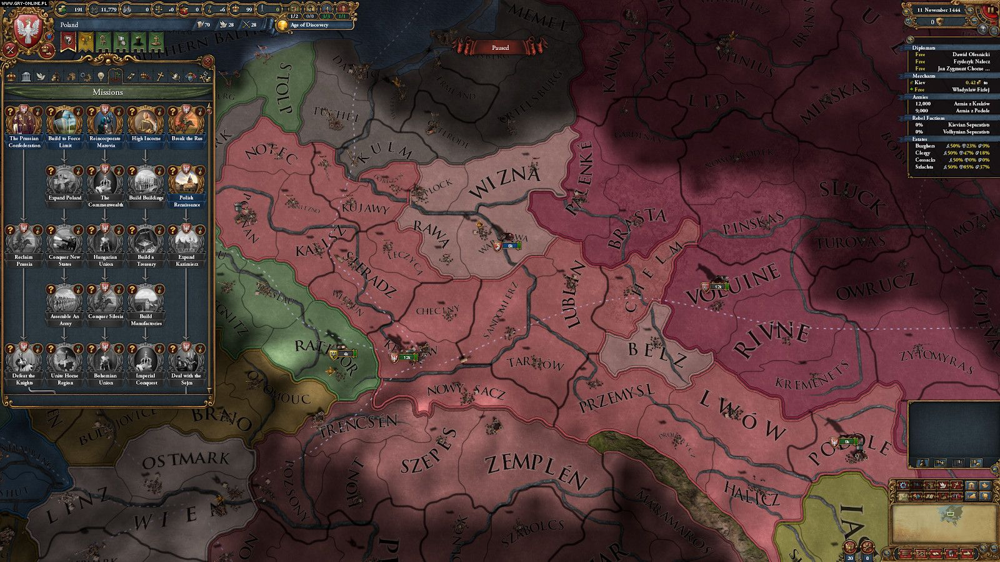
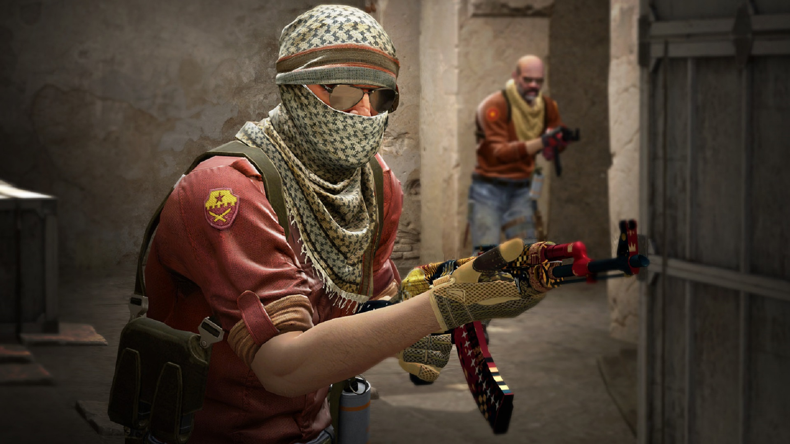
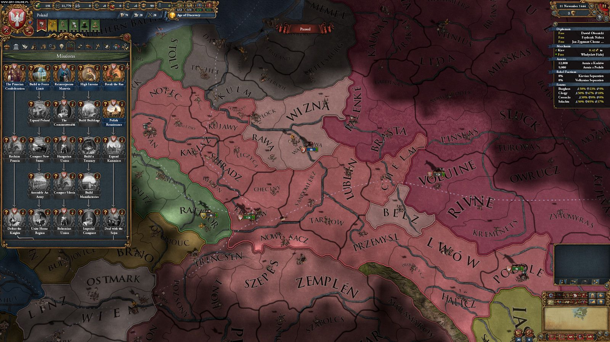
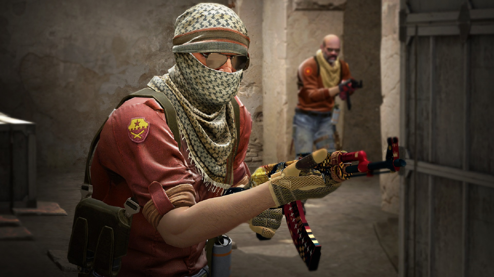

O mnie
Pasjonat gier komputerowych od najmłodszych lat
Cześć! Mam na imię Szymon i od zawsze kocham gry komputerowe. Moja przygoda rozpoczęła się od Gothic 1, który zachwycił mnie mrocznym światem i niesamowitą atmosferą. Do dziś uważam go za arcydzieło RPG! Uwielbiam też gry strategiczne czy też sportowe.
Gothic 1 - Gra, która wszystko zmieniła
Pamiętam, jak pierwszy raz wszedłem do Kolonii Karnej w Gothicu. Świat, w którym każdy dialog i decyzja miały konsekwencje, a postaci żyły własnym życiem, zrobił na mnie ogromne wrażenie. Do dziś uważam tę grę za niedościgniony wzór immersji w RPG!
Moje ulubione gry
Oprócz Gothic, uwielbiam też:
- Wiedźmin 3: Dziki Gon - Mistrzostwo narracji i otwartego świata.
- Europa Universalis 4 - Nieskończone możliwości prowadzenia państw na całym świecie.
- Counter Strike - Rywalizacja i szybka rozgrywka.
 


